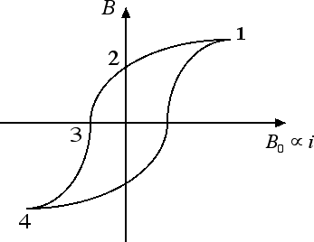

Il campo magnetico
Campo magnetico nella materia
Nelle precedenti sezioni abbiamo visto che una corrente i è in grado di produrre un campo magnetico B. Nelle formule per i campi magnetici compare la costante km = 2 · 10-7 N / A2. Questo valore della costante k è valido solo nel vuoto. Supponiamo invece di introdurre un cilindro all'interno di un solenoide percorso da corrente. Se il campo magnetico nel vuoto ha un'intensità pari a B0, quando introduciamo il cilindro il campo magnetico diventa uguale a B e questo valore dipende dalla sostanza di cui è costituito il cilindro che abbiamo inserito. In particolare, possiamo definire una costante, detta costante di permeabilità magnetica relativa μr = B / B0 (il simbolo μ corrisponde alla lettera mi dell'alfabeto greco). Si possono presentare tre casi diversi, a seconda del materiale di cui è costituito il cilindro:- sostanze ferromagnetiche, μr >> 1. Il campo magnetico B all'interno del solenoide può arrivare a essere migliaia di volte maggiore del campo magnetico nel vuoto B0. Un esempio di materiale ferromagnetico è costituito dall'acciaio. L'acciaio ha la proprietà di magnetizzarsi e, quando questo avviene, nel cilindro all'interno del solenoide le linee di campo si addensano.
- sostanze paramagnetiche, μr > 1. Nelle sostanze paramagnetiche, come il ferro dolce, l'alluminio o il platino, si osserva un leggero aumento del campo magnetico all'interno del solenoide.
- sostanze diamagnetiche, μr < 1. Nelle sostanze diamagnetiche, come il rame o l'argento, il campo magnetico all'interno del solenoide diventa leggermente inferiore rispetto al caso del vuoto.
Ipotesi di Ampere: Ampere, per spiegare il fenomeno del ferromagnetismo, ipotizzò l'esistenza all'interno del cilindro di tante spire circolari percorse da corrente. In condizioni normali queste spire sono orientate in maniera del tutto casuale. L'introduzione del cilindro in un campo magnetico ha la proprietà di orientare le spire tutte nello stesso verso, in modo tale da rafforzare il campo magnetico già esistente all'interno del solenoide. L'ipotesi di Ampere, che non era stata presa troppo sul serio dai suoi contemporanei, è invece oggi avvalorata dai moderni modelli di atomo che prevedono l'esistenza di elettroni in moto attorno al nucleo. Tali elettroni nella fisica moderna giocano il ruolo delle spire circolari ipotizzate da Ampere.
Cosa succede quando annulliamo gradualmente il campo magnetico esterno? L'orientamento delle spire circolari in parte permane e si creano in questo modo dei magneti permanenti artificiali. La curva che descrive come varia il campo magnetico B al variare del campo esterno B0 (che può essere modificato a piacere cambiando il valore della corrente i) prende il nome di curva di isteresi ed è rappresentata nella figura che segue:

Il punto 1 della curva corrisponde alla situazione in cui tutte le spire sono orientate nello stesso verso. Quando annulliamo il campo esterno B0 il campo magnetico B non si annulla perché permane un residuo di orientamento nelle spire (punto 2 della curva). Solo invertendo il verso della corrente che genera il campo magnetico esterno riusciamo ad annullare B (punto 3 della curva). Aumentando la corrente senza variare ulteriormente il verso arriviamo a una situazione in cui tutte le spire sono orientate nel verso opposto (punto 4 della curva). Diminuendo la corrente e alla fine variando di nuovo il verso torniamo al punto di partenza e il ciclo può essere ripetuto.
Se invece consideriamo un materiale paramagnetico, come ad esempio un nucleo di ferro dolce, le spire continuano ad orientarsi e a rafforzare il campo magnetico esterno ogniqualvolta viene accesa la corrente esterna. Quando però la corrente viene riportata a zero anche il magnetismo del nucleo scompare. Queste proprietà possono essere utilizzate ad esempio per costruire un elettromagnete, ossia un dispositivo che si comporta come una calamita solo quando un interruttore va ad azionare la corrente elettrica esterna.